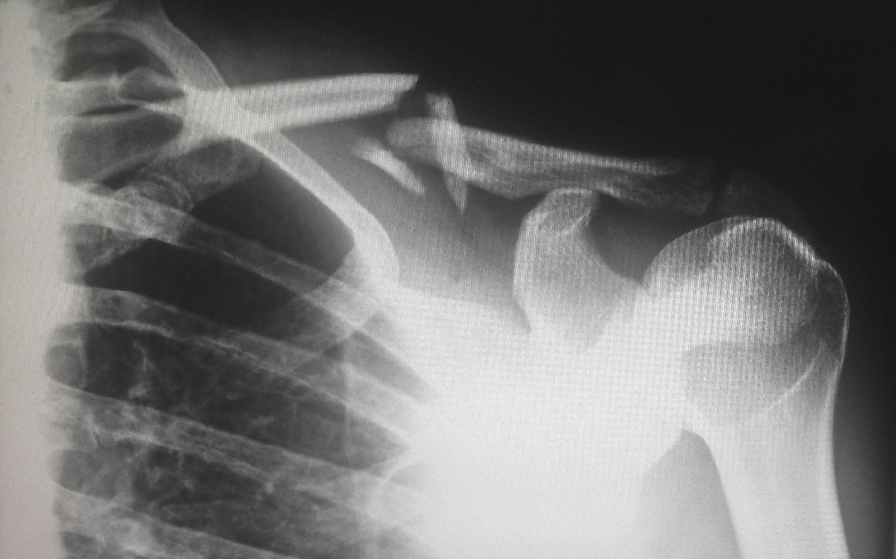

DYLAN SION HAMPTON
I am currently a Third Year Computer Science Student at Swansea University.
The purpose of this portfolio is to showcase some of the work and achievements
that I have gained, during my studies. Please feel free to browse through my work,
my contact details along with links to my social media are available at the bottom of the page.
Final Year Project - Facial Detection and Recognition

My final year project is based in the subject of Computer Vision, where i am attempting
to create an accurate Facial Detection and Recognition system. I will
also be comparing the learning algorithms in OpenCV along with an Support Vector Machine and
a Neural Network.

During my third year I was tasked with developing a full stack website.
I decided to develop a blog site. It's name, The Coffee Bean blog. The website
follows an MVC pattern and is implemented in ASP.NET CORE.

I completed a Big Data and Machine Learning module while in my third year studies, where
I developed a supervised learning system that can accurately
classify objects within images. Using the CIFAR10 dataset, where each image in the dataset
contains one object, IE. an Aeroplane, a boat etc. I managed to develop a Neural Network model to
classify the objects in the dataset.

During my Second Year Computer Graphics module, the assignment, programmed in Java, was to develop a system
that would be able to display CT scan slices of a persons head, The program must be interactive, allowing
the user to view each slice of the CT scans for a top, front and side view of the head. A feature to add Maximum Intensity Projection
to the image was applied and also, the ability to resize the images.